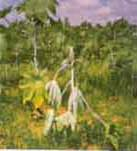
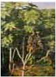

| Home |
| CASTOR |
mAJOR DISEASES |
| 1. Seedling blight |
| 2. Rust |
| 3. Leaf blight |
| 4. Brown leaf spot |
| 5. Powdery mildew |
| 6. Stem rot |
| 7. Bacterial leaf spot |
| 8. Wilt |
| Questions |
| Download Notes |
CASTOR :: MAJOR DISEASE :: STEM ROT
Stem rot - Macrophomina phaseolina
Symptoms
Small brown depressed lesions on and around nodes. Increase in size on both directions causing 2 to 20 cm necrotic area. Lesions often coalesce and girdle the stem causing leaf drop. Drying and death starts from apex and progress. Infected capsules discoloured and drop easily. Sudden wilting of plants in patches under high moisture stress coupled with high soil temperature. Plant exhibit symptoms of drought and drooping of leaves. At ground level black lesions are formed on the stem. Young leaves curl inwards with black margins and drop off later, such branches Die-back. Entire branch and top of the plant withers.
|  |  |
Affected plant showing drooping of leaves |
|
Management
- Grow tolerant and resistant varieties like Jyothi, Jwala, GCH-4, DCH-30 and SHB-145.
- Avoid water logging.
- Destruction of crop debris.
- Selection of healthy seed.
- Providing irrigation at critical stages of the crop.
- Treat the seed with thiram @ 2g/kg or carbendazim at 2g/ kg seed.
- Seedtreatment with Trichoderma viride formulation at 4g/kg of seed.